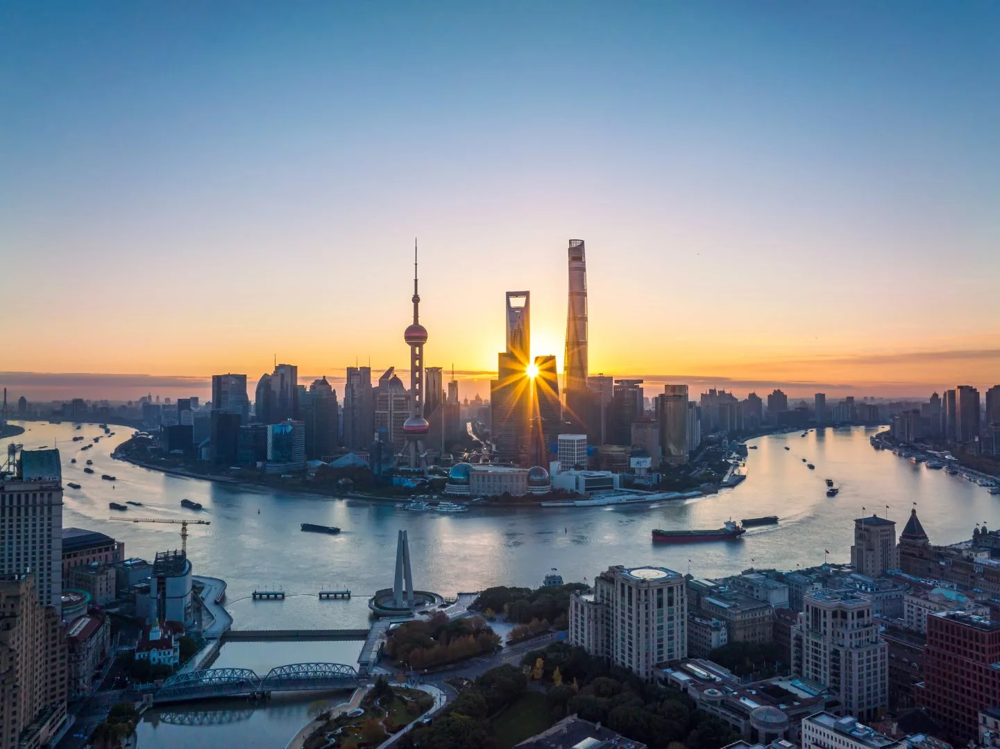

An ancient culture full of beauty and wonder, the world’s most awesome architecture – China’s many extremes are all distilled into its crown jewel on the Yangtze River, Shanghai. From cutting-edge cuisine in Michelin-starred marvels to traditional mooncakes sold by street vendors, from ancient Buddhist temples dusted with cherry blossom to electrified skylines radiating with enterprise and extravagance – Shanghai has it all, and then some.
It’s a megacity of fast-movers, big business and high-fashion indulgence, but between its many breakneck urban hubs you’ll find quaint streets, arty boutiques, and ancient gardens. So get ready to weave your way through a tide of bicycles – we’re going to help you tick off the big landmarks, before getting lost on a Shanghai adventure…

-
OLD MEETS NEW
Serene by day and sparkling by night, Shanghai’s majestic waterfront promenade, the Bund, is an unmissable assortment of ancient and modern landmarks. This section of the port on the Huangpu River truly encapsulates Shanghai’s exhilarating history and clash of cultures, with picturesque colonial buildings lining one bank, and super modern skyscrapers on the other. When you’re done taking selfies in front of the spectacular sights, enjoy some live jazz at the area’s legendary art-deco centrepiece, the Peace Hotel…
-
JUSTIFIED AND ANCIENT
If you like to absorb a little ancient culture when you travel, you’ll be far from disappointed in Shanghai. Bronze sculptures, priceless paintings, Ming dynasty furniture – the Shanghai Museum is a window into the age of elegance. Specialising in pre-modern Chinese artifacts, the museum has eleven state-of-the-art gallery spaces and a collection of over a million items – and the nearby People’s Square is a Shanghai must-see.
-
SIGNATURE BLEND
No trip is complete without finding that perfect nightspot, and Shanghai’s latest unmissable location comes courtesy of the iconic cognac label Hennessy. The aspirational brand is cementing its status and honouring its long legacy in China with BLENDS, its first global concept bar, and it has quickly become a magnet for the effortlessly chic nightlife lovers of Shanghai’s flourishing bar scene. Located in the iconic BUND 18 building and boasting a wild fusion of neo-classical and organic interiors, its luminous lunar shell is the perfect chic spot to sample the bar’s signature range of cognac-infused cocktails.
SIGNATURE BLEND
No trip is complete without finding that perfect nightspot, and Shanghai’s latest unmissable location comes courtesy of the iconic cognac label Hennessy. The aspirational brand is cementing its status and honouring its long legacy in China with BLENDS, its first global concept bar, and it has quickly become a magnet for the effortlessly chic nightlife lovers of Shanghai’s flourishing bar scene. Located in the iconic BUND 18 building and boasting a wild fusion of neo-classical and organic interiors, its luminous lunar shell is the perfect chic spot to sample the bar’s signature range of cognac-infused cocktails.
ART ATTACK
Contemporary Chinese art is having a big moment, and one of its thriving centres is the Xuhui Waterfront along the Huangpu River – also known as the West Bund. The area has become a fast-paced creative hub for international collectors and up-and-coming artists, and its meticulous urban spaces create the perfect opportunity for an afternoon of wonderful wandering. Its cultural highlight is the West Bund Artistic Centre, which stages cutting-edge art and fashion exhibitions in a repurposed aircraft factory.
SHANGHAI EXCESS
Shanghai is nothing if not constantly evolving, and its latest desirable destination for both work and play is New Bund – or Qiantan, a burgeoning business centre packed with opulent apartment buildings, glitzy retail centres, and awesome public art installations. The area’s newest one-stop shopping hub, Taikoo Li Qiantan, is traversed by the Scenic Bridge, an 80-meter pedestrian walkway providing unparalleled panoramic views of Huangpu River. If you’re in the market for some luxury shopping or simply want to marvel at some thoroughly modern architecture, it’s a must.
GET YOUR SKATES ON
Cityscapes like Shanghai’s offer much more than the opportunity for selfies and sight-seeing. Over the last two decades China has seen a surge in the popularity of inner-city sports, and there are skateparks in every major city – but the SMP skatepark in Shanghai is the largest in the world, according to Guinness World Records. The enormous outdoor park in New Jiangwan City spans nearly 45,000 square feet and is the location of the annual international competition, ‘The Showdown’. Undeniably the ultimate mecca for skaters, whatever your skill level – and what’s an urban adventure without a little action?
-
LAST BUT NOT LEAST
If you’re looking for a spectacular souvenir or need something for someone special, save time to visit one of TAG heuer's stores in in shanghai
related articles
an unexpected time in tokyo
Welcome to the series that swerves your stopover into a whole new dimension
READ MOREan unexpected time in tokyo
Welcome to the series that swerves your stopover into a whole new dimension
READ MORE